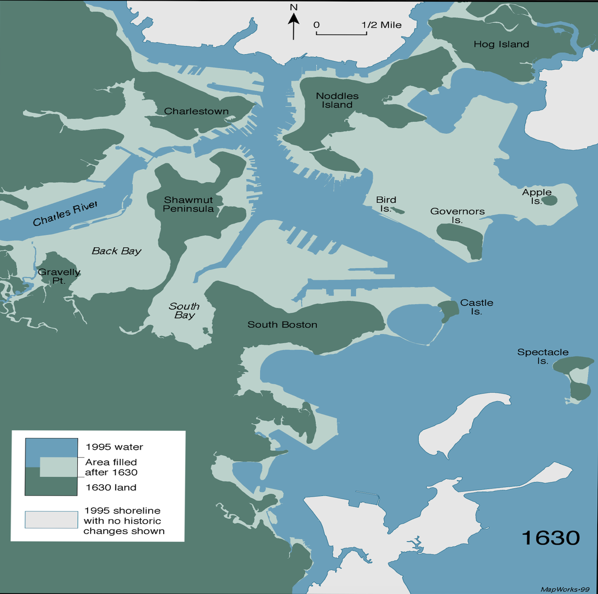

Dashboard Overview
Comprehensive analysis of Massachusetts building inventory from NSI-Enhanced USA Structures Dataset
About This Dashboard
This interactive dashboard analyzes building data from the NSI-Enhanced USA Structures Dataset for Massachusetts. The analysis includes clustering patterns, temporal distributions, material characteristics, and soil properties of buildings across different time periods. All visualizations use color-blind friendly palettes and are fully interactive. Developed during the fall of 2025 by Lang Shao and supervised by Prof. Demi Fang of the Structural Futures Lab. Data visualizations may not be suitable for distribution at this time and should include attribution. If you have any questions, please contact us.
MA Building Hierarchical Distribution
Multi-level breakdown: Occupancy → Area → Height → Year → Drainage
Construction Year → Occupancy → Material → Foundation → Soil
Base: Year → Occupancy. Toggle columns to the right.
Occupancy Class Hierarchy
Breakdown of Occupancy Classes (OCC_CLS) into Primary Occupancy types (PRIM_OCC).
OCC_CLS → NSI occtype matches
Each link sums the number of NSI points in polygons whose OCC_CLS equals the left-hand class. Counts are pooled per class (RES pool, COM pool, ...); points in other classes do not affect this pool.
Notes on NSI Damage Categories vs. Our Sankey Labels
The NSI technical documentation states that certain occtypes are folded into broader ‘damage categories’ : AGR and REL are counted under Commercial, while GOV and EDU are counted under Public. In this Sankey, we intentionally retain the original occtype labels and do not re-bucket them into those damage-category umbrellas (e.g., REL is not folded into Commercial).
Occupancy Homogeneity Score (MIX_SC) Distribution
Distribution of buildings based on the homogeneity of NSI point types within their footprint.
MIX_SC Categories Explained
Same Type Only (NaN in data): All NSI points inside the building polygon are of the same primary type as the building itself.
1 Conflict Type (MIX_SC1): No NSI points of the same type as the building, and all conflicting points are of a single different type.
Same & Different Types (MIX_SC2): The building contains NSI points of its own type plus one or more conflicting types.
>1 Conflict Types (MIX_SC3): The building contains no NSI points of the same type as the building, and has two or more different conflicting types.
Data Pipelines & Processing Pipeline
Understanding the data sources, predictions, cleaning, and distribution
Data Pipeline Overview
This section visualizes the journey of forging our powerful, multi-layered dataset from three distinct sources. We began with the USA Structures building inventory(MA only*) as our foundational layer. This base was then systematically enriched, first by incorporating structural characteristics('Year Built', 'Foundation Type', etc.) from the National Structure Inventory(NSI), and second, by adding crucial geotechnical context from the Web Soil Survey. The following diagrams visualize these complex joins, data cleaning procedures, and the final composition of the dataset...
NSI-Enhanced USA Structures Dataset Composition
Click on any data source to explore its contributed columns
Stage 1: Spatial Join to Create NSI Enhanced Version
USA Structures (Base)
2,091,488 Records
40 Columns
NSI Data Points
2,095,529 Records
11 Columns Added
Operation: Advanced Multi-Stage Spatial Join
An enhanced, multi-stage process was implemented to accurately enrich building footprints with NSI point data. This updated methodology features flexible handling of mixed-use properties, a precise nearest-neighbor buffer match, and systematic occupancy conflict detection to ensure data quality.
- Strategy 1: Intelligent Single-Family Matching
- For buildings classified as 'Single Family', the process now flexibly considers both residential (
RES) and commercial (COM) NSI points inside. This accommodates mixed-use scenarios like in-home businesses. - If one point is found, a direct one-to-one match is made.
- If multiple points are found, their attributes are aggregated to create a composite profile, replacing the previous centroid-based selection. This robustly handles properties with multiple distinct units (e.g., a house with a separate commercial unit).
- For buildings classified as 'Single Family', the process now flexibly considers both residential (
- Strategy 2: Standard Aggregation for Other Buildings
- For all other building types (multi-family, commercial, etc.), all NSI points falling within the footprint are used.
- Their attributes are aggregated to create a comprehensive profile for the building:
- Value & Area (`structure_value`, `nsi_sqft`): Summed to get a total.
- Stories (`nsi_num_story`): The maximum value is taken.
- Characteristics (`year_built`, `material_type`): The statistical mode (most frequent value) is used.
- Strategy 3: Nearest Neighbor Buffer Match
- For NSI points that remain unmatched, this strategy finds the single nearest building polygon within a 5-meter radius.
- This ensures each point is uniquely assigned to its closest building, correcting for minor spatial inaccuracies. A single building can "absorb" multiple nearby points via this method.
- A configurable option also allows buildings already matched in earlier stages to absorb additional nearby points, capturing features like adjacent garages or utility structures.
- Extra Feature: Systematic Occupancy Conflict Detection
- Throughout the process, the script will actively compare the land use category of the NSI point (e.g., 'Commercial') against the category of the building polygon it falls into (e.g., 'Residential').
Stage Details & Unmatched Points(Click for detail)
Result: NSI Enhanced Structures v1
2,091,488 Records
51 Columns (40 Base + 11 from NSI)
A Left Join was performed, so all original buildings were retained. Unmatched buildings(405,037 in total) have NaN values for NSI columns(year_built, foundation_type, etc.).Stage 1.5: 'Unclassified' buildings from USA Structures were re-defined using NSI point data
How we re-label “Unclassified” using OCC_DICT
- Vote by counts in
OCC_DICT(e.g.,RES: 0, COM: 8, IND: 1, GOV: 0, EDU: 0 ...→ Commercial). - REL is counted as Assembly according to USA Structure PRIM_OCC column (e.g.,
RES: 1, IND: 1, REL: 2→ Assembly). - If all
RES/COM/IND/GOV/EDU/AGR/RELare 0 → keep Unclassified. - If there is a tie in the vote (e.g.,
RES: 1, COM: 1), the building will remain Unclassified.
This relabeling occurs in the data cleaning step before any downstream charts/tables,
so all occupancy analyses reflect the updated OCC_CLS.
Unclassified Reclassification Summary
How many Unclassified records were re-labeled into each class
Tie-Breaker Situations (Kept as Unclassified) - Click to expand
Stage 2: Building the Enhanced Soil Layer & Final Join
NSI Enhanced Structures v1
2,091,488 Records (as Points)
50 Columns
Web Soil Survey (WSS) Data
Multiple Source Files:
gsmsoilmu_a_ma.shp, comp.txt, chorizon.txtOperation: Multi-Step Data Enrichment
- Part A: Preparing the Enhanced Soil Layer (Double-Filtering)
- 1. Simplify Soil Components (from `comp.txt`): For each map unit (`mukey`), only the single **dominant component** (the one with the highest percentage, `comppct_r`) is selected. This provides key attributes like drainage and flooding.
- 2. Simplify Soil Horizons (from `chorizon.txt`): For each soil component, only the properties from the **topsoil layer** (`hzdept_r < 10`) are selected to get the engineering properties.
- 3. Attribute Joins: The simplified data from steps 1 and 2 are merged (using `cokey`), and then joined with the soil map (`.shp` via `mukey`) to create a single, enriched soil layer where each area is represented by its dominant, topsoil characteristics.
- Part B: Final Spatial Join
- Method: Point-in-Polygon intersection (`gpd.sjoin`).
- Action: Each building point is spatially joined with the *enhanced soil layer* from Part A to attach all relevant soil properties.
Result: NSI Enhanced Structures v2
2,091,488 Records
63 Total Columns (51 + 12 from Soil)
A final Left Join ensures all buildings are retained, for those some fall outside the soil map coverage(11,385 buidlings), they haven't been signed any soil-relates data.Stage 3: Enriching with Demolition Permit Data
NSI Enhanced Structures v2
2,091,488 Records
62 Columns
Boston Approved Permit Dataset
Demolition Records
3 Columns Added
Operation: Intelligent Spatial Enrichment
- 1. Priority-Based Deduplication: Filters permits ('EXTDEM', 'INTDEM', 'RAZE') and selects the "best" record per address, prioritizing Completed/Closed status over Open, then the most recent date.
- 2. Project to Local CRS: Converts coordinates to EPSG:2249 (MA State Plane) for precise meter-based calculations.
- 3. Nearest Neighbor Join: Finds the single closest permit within a 15-meter radius. Handles ties (equidistant matches) by strictly enforcing one match per building.
- 4. Non-Destructive Merge: Uses Index Alignment to merge `DEMOLITION_TYPE`, `DEMOLITION_DATE`, and `DEMOLITION_STATUS` back to the original dataset, ensuring zero data loss or row shifting.
Result: Final NSI-Enhanced USA Structures Dataset
2,091,488 Records (Exact Match Preserved)
65 Total Columns (62 + 3 from Permits)
Successfully enriched buildings with demolition data without altering the original dataset structure or row count.Data Cleaning Process
How raw data is filtered and cleaned
NSI Methodology Explained
The National Structural Inventory (NSI) sources key building attributes—such as year built and construction material—primarily from the commercial data provider Lightbox. When gaps or missing values occur in the Lightbox data, the NSI applies a logical random imputation methodology based on HAZUS tables to fill in those gaps. This process helps ensure the dataset’s overall completeness and quality. The diagram below shows the fill rate of attributes obtained directly from Lightbox. For any missing data, the NSI may have used HAZUS tables as substitutes.
NSI Data Sources & Predictions
How building material and foundation type data are obtained
Data Source Information
Lightbox provides 2,542,265 total MA building data records. Building material data is available for 1,208,023 records (47.52% coverage), and foundation type data for 54,497 records (2.14% coverage). Missing values are predicted using HAZUS methodology.
Soil Properties and Risk Analysis
Comprehensive analysis of soil conditions and their impact on building infrastructure
Soil Data Categories
Drainage Classes: Well drained, Moderately well drained, Somewhat excessively drained, Poorly drained, Very poorly drained, Excessively drained
Flooding Frequency: Low, Moderate, High
Engineering Properties: <= 0.17 Favorable, > 0.17 and <= 0.24 Fair, > 0.24 and <= 0.32 Poor, > 0.32 Very poor
Soil Component: Various soil types identified by compname field
Risk Assessment Methodology
High-risk buildings are identified based on poor drainage conditions (Poorly drained or Very poorly drained) and/or frequent flooding risk (Occasional or Frequent). These conditions can impact foundation stability, basement flooding potential, and overall structural integrity over time. Buildings in high-risk zones may require additional maintenance and waterproofing measures.
Clustering Analysis
K-means clustering results based on building area, year built, and occupancy class (using a random sample for visualization)
Temporal Distribution
Building construction patterns over time with multiple visualization options
Data Quality Note
Some years may have missing or incomplete data (2006, 2009, 2010, 2011, 2013, 2014, 2015, 2016). Years with notably low counts may indicate data collection gaps rather than actual construction patterns. We are currently working on addressing and correcting these gaps.
Pre-1940 Building Analysis
Detailed analysis of historic buildings constructed before 1940
Post-1940 Building Analysis
Modern building construction patterns from 1940 to present (annual data)
Multi-Dimensional Occupancy Clustering Analysis
Advanced clustering analysis with dynamic feature selection for true multi-dimensional clustering
Dynamic Clustering Features
Base Dimensions (4D): Year Built, Footprint Area (SQMETERS), Height (HEIGHT_USED — measured HEIGHT when available, otherwise PRED_HEIGHT), Occupancy Class
+ Material Type (5D): Adds material type as a clustering dimension
+ Foundation Type (5D): Adds foundation type as a clustering dimension
+ Both (6D): Includes all dimensions for comprehensive clustering
Real-time Reclustering: Each toggle change triggers new clustering calculations based on selected features
Building Materials & Foundation Analysis
Correlation between material types and foundation types - Click on any cell to see occupancy breakdown
Material & Foundation Type Codes
Material Types: M = Masonry, W = Wood, H = Manufactured, S = Steel, C = Concrete
Foundation Types: C = Crawl Space, B = Basement, S = Slab, P = Pier, I = Pile, F = Fill, W = Solid Wall
👉 Click on any cell in either heatmap to see the occupancy class distribution for that combination
Material Usage Trends Over Time
Normalized percentage of material types for new construction in each decade.
Boston's Historic Shoreline and Filled Land
Visualizing buildings constructed on land reclaimed since 1630.
The Filling of Boston
The map of Boston has changed dramatically since its founding in 1630. Much of what is now considered central Boston was once tidal flats and marshes. Through extensive land reclamation projects over centuries, areas like Back Bay, the South End, and parts of Downtown were created from fill. This historic map shows the original 1630 shoreline, and the interactive map below displays modern buildings that now stand on this reclaimed land.
Historic Shoreline Map (c. 1630)
Buildings on Reclaimed Land
An interactive map of structures located on areas that were filled after 1630.
Interactive Data Explorer
Explore the data with custom filters and advanced visualizations (*Data from 75,000 random sampled data from 1.7M cleaned dataset)
Tips for Interactive Explorer
• 3D Scatter: Rotate with mouse, zoom with scroll wheel
• Sunburst: Click segments to zoom in, click center to zoom out
• Parallel Coordinates: Drag axes to reorder, brush to filter
• All charts: Hover for details, double-click to reset view
CLF Data Analysis
Analysis of Carbon Leadership Forum dataset for Massachusett
CLF Data Preprocessing
This dataset originates from the New Construction MA Projects from the CLF building metadata, processed to be compatible with the NSI Enhanced USA Structure dataset. Key transformations include:
Occupancy Classification (OCC_CLS)
Detailed CLF building uses were mapped to NSI Enhanced USA Structure dataset categories.
This mapping is primarily based on the definitions from the USA Structure dataset's PRIM_OCC column.
| CLF Building Use | Mapped NSI Category (OCC_CLS) |
|---|---|
| Multifamily (5 or more units) | Residential |
| Lodging | Residential |
| Office | Commercial |
| Mercantile | Commercial |
| Food Service | Commercial |
| Laboratory | Commercial |
| Healthcare | Commercial |
| Parking | Commercial |
| Public Order and Safety | Government |
| Warehouse and Storage | Industrial |
| Industrial | Industrial |
| Public Assembly | Assembly |
| Religious Worship | Assembly |
| Transportation Hub | Assembly |
| Education | Education |
| Other | Utility and Misc |
Material Type Encoding (material_type)
CLF structural systems were mapped to single-letter codes.
This mapping was inferred by combining several CLF columns: str_prim_horiz_sys, str_prim_vert_sys, str_lat_sys, and str_sec_vert_sys.
| CLF Structural System | Mapped Code (material_type) |
|---|---|
| Steel | S |
| Concrete | C |
| Steel/Concrete | S |
| Steel/Masonry | S |
| Wood: Mass Timber | W |
| Wood: Light-frame | W |
| Other | H |
| M = Masonry, W = Wood, H = Manufactured, S = Steel, C = Concrete (in NSI Enhanced USA Strucuture dataset) | |
Other Key Transformations
bldg_compl_yearwas mapped toyear_builtbldg_cfawas mapped toEst GFA sqmetersstr_fdn_typewas mapped togeneral_fnd_type- Height Standardization: Text descriptions (e.g., "10-12 m") were converted to numeric averages (e.g., 11 in the HEIGHT column, which is in meters).
- Data Cleaning: 2 Records with missing floor area data (Est GFA sqmeters) were removed.
- Finally 16 projects from CLF are analyzed
Scatter Plot CLF MA Data Explorer
Compare GFA, Total Mass, and GWP, colored by Occupancy Class.
CLF Heatmap Analysis
Correlation between foundation types and structural systems.
Mapped Material Type vs. Foundation Type
Original Structural System vs. Foundation Type
GFA Distribution: Main Dataset vs. CLF Dataset
Comparison of Est GFA (sqm) by Occupancy Class. Boxes represent the main dataset (from 75,000 random sampled data from 1.7M cleaned dataset); 'x' markers represent the CLF dataset.
Error Loading Data
Unable to load building data. Please ensure building_data.json is in the same directory.